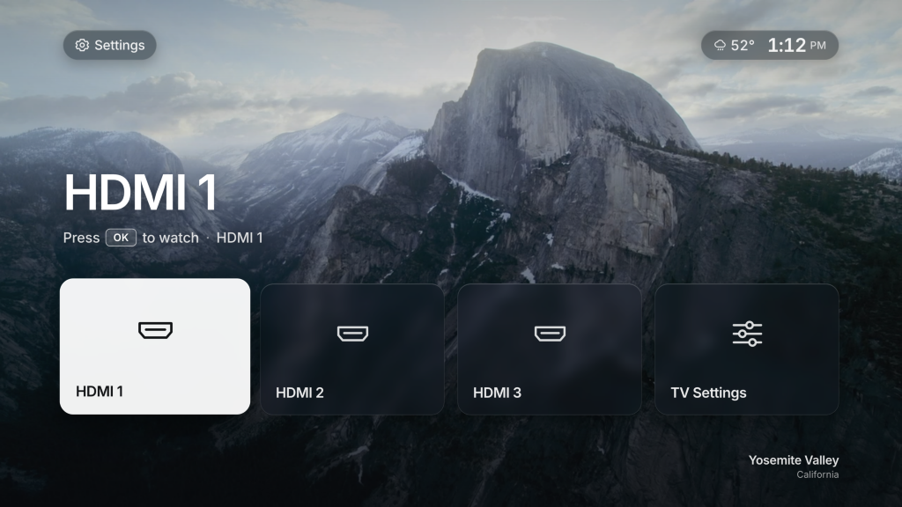
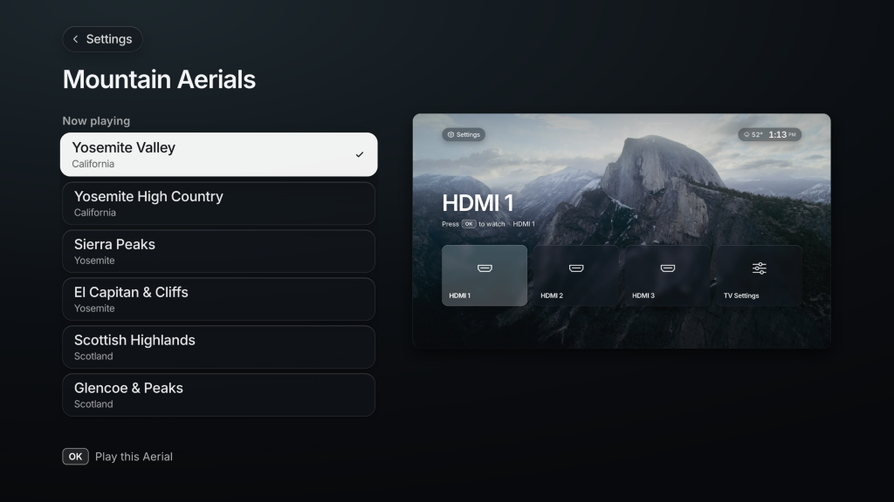

Live Dynamic HDMI Cards
Reads plugged-in inputs, CEC device names, and live power state directly from webOS. Automatically hides eARC soundbars/AVRs and matches icons for Apple TV, PS5, Switch, Xbox, and PC/Mac.
Replace LG’s cluttered Home with live HDMI input cards, full-length mountain Aerials, and OLED panel protection. Lightweight (~109 KB), fast, and works rooted or non-rooted.
Designed around how people actually use an OLED TV with an Apple TV or game consoles — fast input switching, zero ads, and thoughtful panel care.
Reads plugged-in inputs, CEC device names, and live power state directly from webOS. Automatically hides eARC soundbars/AVRs and matches icons for Apple TV, PS5, Switch, Xbox, and PC/Mac.
6 uncut (4–7 min) Yosemite & Scottish Highlands Aerials stored persistently on the TV with seamless dual-<video> crossfades, single hardware decoder, and subtle location captions.
Enters Ambient Mode after 2.5 min idle with a drifting Inter clock, date, and weather overlay. Automatically powers off the OLED panel after 30 or 60 min and dims from 9 PM–6 AM.
On rooted TVs with Home Chooser, pressing Home launches mtnview natively with zero LG Home flash. Optional daemons add auto-return when consoles power off and /etc/hosts ad-blocking.
Auto-detects 12h/24h clock and °F/°C weather from your locale, supports Magic Remote pointer hover focus, and tucks installed webOS apps cleanly under Settings → LG TV.
Pure ES5 JavaScript and lean GPU-friendly CSS (~109 KB .ipk). Installs in seconds on non-rooted TVs via webOS Dev Manager, or unlocks full daemons on rooted TVs via Homebrew Channel.
Tested on LG OLED C6 (webOS 11.2.0 / Rockhopper) with crisp 1080p scaling, frosted glass cards, and hardware-decoded mountain Aerials.


Start with the pre-built .ipk on any LG webOS TV, or run the full rooted setup for persistent Aerials, zero-flash Home, and ad-blocking.
.ipkGrab com.mtnview.launcher_1.1.0_all.ipk (~109 KB) from the latest GitHub Release.
Sideload it with webOS Dev Manager (no root required) or install directly through Homebrew Channel.
Get webOS Dev Manager →Open mtnview from your TV’s app bar. Your plugged-in HDMI devices appear automatically.
Read full README →# 1. Clone and set your TV's local IP
git clone https://github.com/ethanimooney/mtnview.git
cd mtnview
mkdir -p .local
printf "LG_TV_IP=192.168.1.XX\nNODE_BIN=$(which node)\n" > .local/tv.env
# 2. Fetch & convert the 6 Yosemite & Scottish Highlands Aerials locally
./scripts/download-aerials.sh
# 3. Build & install mtnview (~109 KB), sync Aerials, and install TV daemons
./scripts/deploy-lg.sh
./scripts/sync-aerials-lg.sh
./scripts/restore-tv.shThen open Home Chooser on your TV and select mtnview — pressing the Home button now opens mtnview natively with zero LG Home flash.
The optional rooted daemon auto-discovers your HDMI ports and remaps unused streaming buttons globally — plus quick color keys inside mtnview.
Free, open source, and MIT licensed. Built for people who just want to pick an input and watch.